Business Rules
Business Rules
Finance Engine
While the concepts in this chapter technically apply to all types of business rules, we will focus mainly on finance rules as that is where you will likely spend the majority of your time in your OneStream career. With that in mind, we first provide some context around the finance engine before delving into the nitty gritty of business rules.
The finance engine is an in-memory financial analytic engine that is responsible for consolidating data up to parent entities and executing complex calculations through business rules and Member Formulas. We realize that’s a bit abstract, and you might be wondering what is the finance engine really and, more importantly, how do I interact with it?
Well, the finance engine performs work when triggered by certain events, like running a calculation, translation, or a custom calculation. Depending on the event triggered, the finance engine will also execute the business rules attached to your cube to check if you’ve applied any custom logic. When these business rules are executed, the finance engine as the overall controller will pass in several arguments to the Main function call. To understand what these arguments represent, let’s continue by breaking down the anatomy of a finance business rule.
Business Rules › Finance Engine
Finance Rule Structure
Business Rules › Finance Engine › Finance Rule Structure
General Template
All finance rules must contain a Main function, which is the main entry point for the rule and is the function that is executed by the finance engine when various events are triggered. From the function declaration, we can see that a finance rule expects four objects to get passed in:
SessionInfoBRGlobalsFinanceRulesApiFinanceRulesArgs
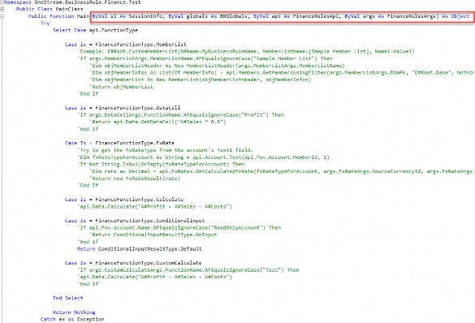
Figure 10.1
Whenever you create a finance rule from scratch, OneStream will automatically populate the Main function with several empty case statements, where you can add your logic depending on the type of event you want to configure.
Business Rules › Finance Engine › Finance Rule Structure
Finance Rules API
The key object here – the secret sauce – is the FinanceRulesApi object, which is assigned to the api variable. The FinanceRulesApi class gives you access to all the functions you might need to calculate and store financial data – i.e., everything the finance engine is responsible for! So, for our earlier question of how we interact with the finance engine, the FinanceRulesApi object is the answer.
This becomes even clearer when we dig into the class properties, which essentially categorize the finance engine’s responsibilities into sub-APIs. The following table lists the key properties of the FinanceRulesApi. At the end of the day, getting “experienced” coding in OneStream really means developing an intuition on where the function you need is.
| Property | Description |
|---|---|
| FunctionType | Contains information on the triggering event. This is discussed in more detail below. |
| Pov | Contains information on the active Data Unit (cube, scenario, time). Depending on the triggering event, it might contain additional member info (e.g., if we are checking whether a fully-defined data cell is read-only, then this will include account, UDs, etc.). As a nice tip, this API has all of the dimensions on the active cube baked-in (e.g., |
| Data | Contains all functions related to querying data buffers and cells, and saving calculated data to the database. The most famous function is, of course, api.Data.Calculate |
| Dimensions | Contains functions related to getting dimension information. Most often, you’ll be using the api.Dimensions.GetDim function to grab a dimension for its primary key. |
| Member | Contains functions to pull member information and traverse member hierarchies within a dimension. |
| Entity | Contains functions to get entity-specific member info, in particular consolidation and aggregation setting values. |
| Time | Contains useful helper functions to get time periods, and get other time periods relative to a given time period (e.g., get the period two months prior to the current period). |
Account, Flow, …, UD8 | Functions to get member info for each of the specific dimension types. |
| LogMessage | A quick shortcut to write log messages to the Error Log. |
Figure 10.2
| Note: For a more detailed list of the functions in each of these classes, you can refer to the OneStream API Details and Documentation. Refer to the Technical References Section to see how to access this. |
Business Rules › Finance Engine › Finance Rule Structure
FinanceFunctionType
Let’s cover the final piece of the puzzle, the api.FunctionType property. Whenever the finance engine triggers a business rule on the cube, it sets this property on the api object before passing it to the rule’s Main Function. Let’s take a look at a few of the api.FunctionType values:
FinanceFunctionType.Calculate: This is what the finance engine passes as an argument when you trigger a calculation manually, or if a calculation is triggered as part of a translation or consolidation.FinanceFunctionType.FXRate: This is what the finance engine passes when you trigger a translation.FinanceFunctionType.ConditionalInput: This is what the finance engine passes when it checks the read-only status of each intersection on data loads.FinanceFunctionType.MemberList: This is what the finance engine passes when you call a member list expansion in a Member Filter (e.g., triggered in a Cube View).
The takeaway here is that the available values for api.FunctionType represent the list of events that can trigger a Finance Business Rule, and more importantly, are events that you can customize with code.
For example, by adding code to the FinanceFunctionType.FXRate case block and disabling the default translation algorithm on the cube, you can add custom logic for what FX rates to use instead of the system default FX rates.
Business Rules › Finance Engine
Cube Data Unit
Recall that when the finance engine performs any task – whether it is loading data, clearing data, or calculating data – it operates on the cube Data Unit (also known as the Level 1 Data Unit). A cube Data Unit is the largest unit of work in OneStream and is comprised of the six Data Unit dimensions: Cube, Entity, Parent, Consolidation, Scenario, and Time.
When we say, “operates on”, what we mean technically is that when the finance engine performs any work on a specified Data Unit, it will first query and cache all records from the database contained within the specified Data Unit in-memory. By caching these records, when you call functions like api.Data.GetDataBuffer, OneStream does not need to repeat expensive operations and re-query records directly from the database.
In the context of finance rules, these six Data Unit dimensions will always be appended by default to any api.Data method call. For example, when you call api.Data.Calculate you do not need to specify your target cube or entity; the finance engine already knows because you have specified it in your active Data Unit. Furthermore, the six members making up your Data Unit are loaded into the api.Pov object so they are available without you having to manually query them.
Business Rules › Finance Engine
Data Unit Calculation Sequence (DUCS)
When a calculation is triggered, after pulling the cube Data Unit into memory, the finance engine will perform a series of steps, defined as the Data Unit Calculation Sequence.
Clear previously calculated data for the Data Unit.
Run the scenario’s Member Formula.
Run reverse translations by calculating Flow members from other Alternate Currency Input Flow members.
Execute Business Rules 1 and 2.
Run Formula Passes 1-4 for the cube’s Account dimension members, then Flow members, and then User-Defined members.
Execute Business Rules 3 and 4.
Run Formula Passes 5-8.
Execute Business Rules 5 and 6.
Run Formula Passes 9-12.
Execute Business Rules 7 and 8.
Run Formula Passes 13-16.
Business Rules
Business Rule Best Practices
Writing clean, easy-to-read code is essential for scalability and maintainability, especially when the responsibility for maintaining code falls on you as the admin. Debugging messy code has massive time costs: if you have ever spent weeks deciphering jumbled, messy business rules thousands of lines long, you understand what we mean. In the worst case, sometimes technical debt becomes so great that the only option is to jettison the code and start from scratch, starting a new development and testing cycle that might not have been budgeted for.
But what is “clean code”? This phrase is often thrown around like a magic spell, but very rarely explained. To us, clean code is code that clearly conveys meaning. Remember that code is meant to be read by humans, not machines. So, your goal should always be to write code that a stranger would be able to read without guidance and still parse your intent. You’ll know you’ve failed if that stranger instead asks themselves “What is this code even doing?” The funny thing about messy code is that, oftentimes, the stranger asking that question might just be the future you.
Writing clean code boils down to a few key concepts:
Following agreed-upon standards.
Leveraging the correct data structures and code patterns.
Organizing code through careful naming and abstraction.
In this chapter, we focus mainly on VB.NET, but the concepts discussed will apply to C# and, indeed, every programming language in general, though there might be some minor variations in conventions and syntax.
Business Rules › Business Rule Best Practices
.NET Coding Standards
In this section, we cover the recommended Microsoft .NET coding standards for VB.NET, and provide context on why these standards exist. We’ll also show examples of how to apply these standards in OneStream-specific business rules.
Business Rules › Business Rule Best Practices › .NET Coding Standards
Naming Conventions
While it seems like such a trivial thing, it’s extremely important to always use meaningful, descriptive names for all the objects in your program, especially variables and functions; we are all guilty of being lazy sometimes and using generic names like objStr or buffer1 (I certainly am).
However, naming accounts for 80% of the readability of your code, so it’s always worth taking a little extra time to be thoughtful when choosing names. That said, proper naming is actually quite difficult, as it requires you to understand the structure and intent of your code ahead of time, and is often more of an art than an exact science.
Business Rules › Business Rule Best Practices › .NET Coding Standards › Naming Conventions
Variables
Use camelCase notation for local variables. Avoid single-letter variable names, except for loop counters.
Figure 10.3
Again, always use meaningful, descriptive names for variables. For example, I always make sure to name my DataBuffer variables to describe the data they represent. Compare the following two examples.
The first example (while shorter) is harder to understand, because I must parse each
argument in the calculation one by one, and it is unclear what intersections I’m affecting.
The second is better because I can understand at a glance what the intent of the calculation is (multiply prior asset amounts by growth rates), and I can guess what the source intersections are (asset accounts) without having to refer to the dimension library.
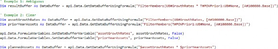
Figure 10.4
Also, avoid adding the types of variables to their names; this is redundant since you should be declaring the type of your variable anyway, and IntelliSense will allow you to quickly hover over a variable to get the same information. This habit is a carryover from out-of-date, weakly-typed programming languages and is universally discouraged today.
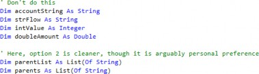
Figure 10.5
Business Rules › Business Rule Best Practices › .NET Coding Standards › Naming Conventions
Constants
Named constants should use PascalCase and should convey the meaning of the constant.
Figure 10.6
Business Rules › Business Rule Best Practices › .NET Coding Standards › Naming Conventions
Methods
Use PascalCase for method names. Also, remember that methods always do something, and so method names should always start with a verb, to indicate an action. For example, for event handlers, a common convention is to prefix the name with Handle.
Public Function CalculateTotal() As Decimal ' ... End Function Private Sub HandleButtonClick(sender As Object, e As EventArgs) ' ... End Sub |
Figure 10.7
The same logic when naming variable names comes into play here; always take the time to create simple, meaningful function names. Also, be equally careful when naming your function parameters! If a function is well-named, you can often guess what it does based on its name and its parameters alone, without needing to scroll to the function to read its header or pull out the documentation.
Consider these two examples in the screenshot below.
The first example shows a very common coding pattern: creating a function to check if a variable meets a condition. Here, it’s easy to reason-out – from its name – that the function is checking whether the active Data Unit time is a planned period. Because we named the function in a meaningful way, the code almost reads like English: “If we’re in a planned period, run our plan calcs.”
The second example is also self-explanatory. Take a logger object, and write its contents to a file called
PlanCalcLOG.txtin theGroups/Administrator/TestLogsdirectory in theFileShare. If the function writes to the application database instead, I would have instead named the functionWriteLoggerToAppDB.
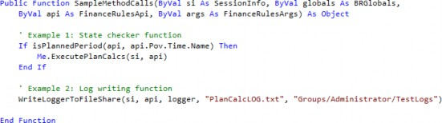
Figure 10.8
Hopefully, this example demonstrates that if you are deliberate about naming your variables and methods, your code will read like English and require fewer comments and documentation to understand.
Business Rules › Business Rule Best Practices › .NET Coding Standards › Naming Conventions
Classes
Class names should be nouns, indicating the object that the class represents. Use PascalCase for Class names.
Public Class Customer ' ... End Class |
Figure 10.9
Business Rules › Business Rule Best Practices › .NET Coding Standards › Naming Conventions
Properties
Property names should be nouns, indicating the data that the property represents. Use PascalCase for Property names.
Public Class Customer Public Property FirstName As String Public Property LastName As String End Class |
Figure 10.10
Business Rules › Business Rule Best Practices › .NET Coding Standards › Naming Conventions
Enums
Enum type names should be singular. Enum members should be PascalCase.
Public Enum Day Sunday Monday Tuesday Wednesday Thursday Friday Saturday End Enum |
Figure 10.11
Business Rules › Business Rule Best Practices › .NET Coding Standards
Indentation Conventions
Indentation is crucial to understanding the hierarchical relationship between different code blocks; without it, it becomes extremely difficult to follow the flow of control through your code. This is especially true when your code is long enough that the beginning and end of control blocks don’t fit on the same page, and when there are lots of nested control blocks. Let’s compare an example of poorly indented code with the same code indented well to illustrate how much indentation affects readability.
This first example is extremely difficult to parse for a multitude of reasons. For one, it is difficult to determine which End If belongs to which starting If, so you have to manually scan line by line to find a match. For another, you cannot even tell how many case blocks there are without scanning the entire rule. Obviously, the example is a bit contrived but not wholly unrealistic.
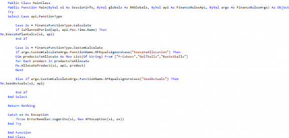
Figure 10.12
This next example is much better. You can clearly see where each control structure begins and ends, and only look at the blocks that you care about. For example, if I know I am debugging within the Calculate case block, I can ignore anything in the CustomCalculate case block.
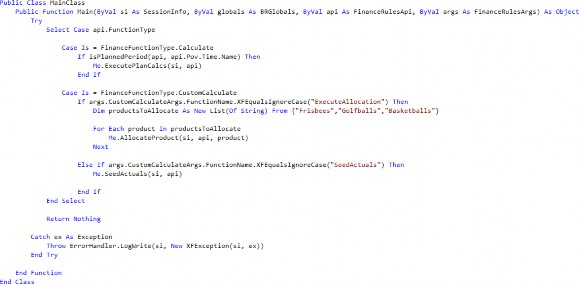
Figure 10.13
Business Rules › Business Rule Best Practices › .NET Coding Standards › Indentation Conventions
Use Tabs/Spaces
Use four spaces or a tab for each level of indentation. It doesn’t matter which you choose as long as you stay consistent with the rest of your code base.
Sub Main() Dim num As Integer = 10 If num > 5 Then Console.WriteLine("Number is greater than 5") End If End Sub |
Figure 10.14
Business Rules › Business Rule Best Practices › .NET Coding Standards › Indentation Conventions
Indent Control Structures
The following control structures must all be indented. Keep the beginning and end of each control structure at the same indent level, and indent all statements in between with an additional level of indentation.
If…Then…ElseSelect…Case: This block is special because it really is made up of a combination of theSelect…End Selectblock, with additionalCaseexpressions, both of which should be indented.Try…Catch…FinallyWhile…End WhileDo…LoopFor…Nextloops,For Each…NextloopsUsing…End UsingWith…End WithClasseswithinNamespacesFunctionsandSubswithinClassesRegions
Here, for example, the If, Else, and End If keywords are all on the same level; the console statements between them are all indented one additional level.
If num > 0 Then Console.WriteLine("Positive number") Else Console.WriteLine("Non-positive number") End If |
Figure 10.15
Business Rules › Business Rule Best Practices › .NET Coding Standards › Indentation Conventions
Indent Long Lines
When a line of code is too long to fit on a single line, break it up and indent the continued line with an additional level of indentation.
Dim result As Integer = FunctionWithLongNameAndLotsOfParameters( parameter1, parameter2, parameter3, parameter4, parameter5, parameter6, parameter7, parameter8) |
Figure 10.16
This happens very frequently with api.Data.GetDataBuffer statements when you have a lot of complicated arguments and filters. As a tip, I personally like breaking up the initial script and the filters into separate rows for better readability.
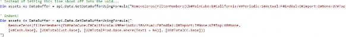
Figure 10.17
Note: When indenting strings like this, be careful where you place your whitespace, as it might cause an error at runtime. If we had placed a space before the E# for example, OneStream would have thrown an error when executing the script. |
Business Rules › Business Rule Best Practices › .NET Coding Standards
Spacing Conventions
Good spacing improves code readability. These are some common guidelines, but note that there is some room for flexibility: for example, you might want to add additional blank lines to separate groups of related code, like local variables from the business logic.
1. Add spaces around both sides of all operators (=, <>, <, >, <=, >=, And, Or, +, -, *, /, etc.)
Dim sum As Integer = num1 + num2 Dim result As Boolean = (num1 > num2) And (num1 < num3) |
Figure 10.18
2. An exception to the previous rule is that you should not add spaces around the . operator used for member access.
Dim name As String = customer.Name
Figure 10.19
3. Use a single space between function arguments and array elements.
Dim result As Integer = AddNumbers(num1, num2, num3) Dim numbers As Integer() = {1, 2, 3, 4, 5} |
Figure 10.20
4. Do not use spaces immediately inside parentheses.
Dim result As Boolean = (num > 10) And (num < 20)
Figure 10.21
5. Add blank lines between Property and method declarations.
Public Property Name As String Public Function CalculateTotal() As Decimal ' ... End Function |
OneStreamPress.com is the website for OneStream Press. Here, you can discover all our current and upcoming titles, read chapter excerpts, learn about bulk sales, pitch new book ideas, and much more. |
Figure 10.22
Business Rules › Business Rule Best Practices › .NET Coding Standards
Organization
Business Rules › Business Rule Best Practices › .NET Coding Standards › Organization
Order of Class Elements
Elements should generally be in the following order, from top to bottom:
FieldsConstructorsPropertiesMethods
Public Class Customer ' Fields Private Shared nextId As Integer Private id As Integer ' Constructors Public Sub New() id = System.Threading.Interlocked.Increment(nextId) End Sub ' Properties Public Property Name As String Public ReadOnly Property Id As Integer Get Return id End Get End Property ' Methods Public Function GetNameAndId() As String Return $"{Name}, {Id}" End Function End Class |
Figure 10.23
Business Rules › Business Rule Best Practices › .NET Coding Standards › Organization
Imports
Imports should always be placed at the top of the file, sorted alphabetically.
Imports System Imports System.Collections.Generic Imports System.Linq Imports System.Text |
Figure 10.24
Business Rules › Business Rule Best Practices › .NET Coding Standards › Organization
Regions
Region(s) are useful for grouping related members together. For example, a common use is to group fields and properties together, or to group certain functions together. A neat benefit of using regions is that, like functions, most editors will allow you to collapse and expand regions.
OneStream’s built-in editor will have all regions collapsed by default, which is nice if your business rule is large and you have a lot of helper classes and functions.
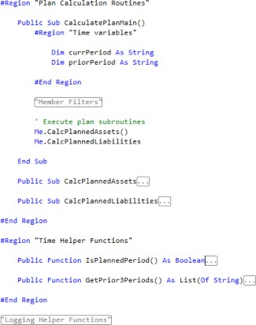
Figure 10.25
However, while the judicious use of regions can help code organization and readability, overuse of regions can become a crutch and potentially make code harder to read. No number of regions will make up for poor abstraction – separating responsibilities into different namespaces, classes, and functions. If you find that your class or function is too long, and you’re depending on regions to keep things readable, that’s a good sign that you should refactor and break it up into smaller pieces.
Business Rules › Business Rule Best Practices › .NET Coding Standards
Comments
Comments can greatly improve code readability and maintainability because they’re the most direct way to describe the context around your code. You should try to make your code as self-explanatory as possible through meaningful naming and careful abstraction using functions and classes, and add comments to provide context or detail that is not obvious in the code. Comments should explain the ‘why’ of your code; the reasons you approached the requirements a certain way.
Overall, the purpose of comments is to help other developers – including future you – understand your code. If you have the choice between over-commenting or under-commenting, it is better to err on the side of over-commenting (within reason, of course).
Business Rules › Business Rule Best Practices › .NET Coding Standards › Comments
Conventions
Here are the standard conventions for commenting within VB.NET:
Put comments on a separate line instead of on the same line as a line of code.
Start comment text with an uppercase letter, and end comment text with a period.
Insert one space between the comment delimiter (
') and the comment text.
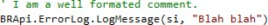
Figure 10.26
Business Rules › Business Rule Best Practices › .NET Coding Standards › Comments
Examples of Useful Comments
Use inline comments to explain why certain decisions were made in your code. Here are several examples:
Add the business rationale to your code!
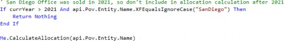
Figure 10.27
Include technical details from the overall application build.
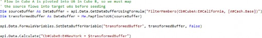
Figure 10.28
Provide alternatives to the code that you tried.
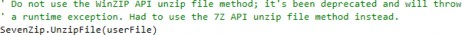
Figure 10.29
Explain why certain parameters were passed.
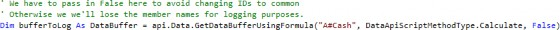
Figure 10.30
Use comments to quickly summarize complex blocks of code.
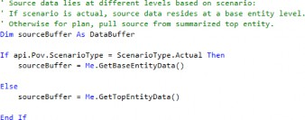
Figure 10.31
Business Rules › Business Rule Best Practices › .NET Coding Standards › Comments
Avoid Redundant Comments
Avoid comments that simply restate one-for-one what the code is doing or, in other words, comments that provide the same level of detail as the code. These comments add no value and – in fact – subtract value by cluttering your code. Here are some examples of comments to avoid:
Commenting declarations.
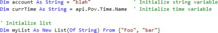
Figure 10.32
Commenting the end of control blocks.
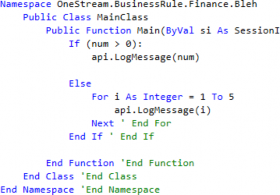
Figure 10.33
If you are doing this because your control blocks are so large that you cannot trace their beginnings and ends visually, that is usually a sign you need to refactor your code.
| Note: I am not sure where or when this pattern originated, but it is very common and a tiny, personal pet peeve of mine. |
3. Repeating or restating code
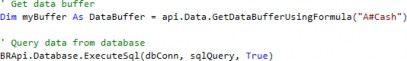
Figure 10.34
Note that the main idea is to avoid meaningless comments, not all comments in general. The examples above are all examples of comments that do not add any detail or context to the code.
Business Rules › Business Rule Best Practices › .NET Coding Standards › Comments
Purge Commented Code
As you develop and maintain business rules in OneStream, you’ll often comment out large chunks of code temporarily for testing. Once you’re done testing, and you’re ready to commit to your new code, it’s often extremely tempting to just leave that old code be: it’s not hurting anybody, and better safe than sorry, right? Unfortunately, the answer here is no. [Figure 10.35 – is this supposed to return “Bork”?]
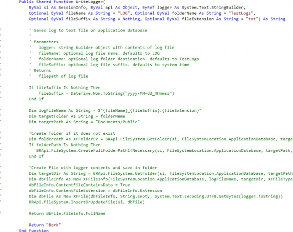
Figure 10.35
There are several reasons why you should always purge your commented-out code once you’re done with it:
At best, the commented-out code gets ignored, creating clutter and hiding the relevant, important code.
At worst, the commented-out code creates doubt and confusion around the existing code. Future developers (potentially future you) will always wonder if that old code is important; or they may even wonder if the commented-out code is actually correct, and if the active code is test code that never got commented-out and then forgotten. This is a waste of their time and potentially additional people’s time if they stop development to hunt down the original developer to confirm their doubts.
If you’re worried about preserving old versions of your code, let’s emphasize that commenting code is never an appropriate form of version control. Ideally, you would use a version control like Git. Alternatively, you can save a backup locally, though this is a tad archaic. Finally, in the worst-case scenario, OneStream retains every version of each business rule in the audit tables, which you can access manually or via the business rule utility.
Leaving commented-out code is a bad habit stemming from a lack of confidence. You would be better served being confident in your code and confident in your ability to revert if your testing turns out to be flawed – believe in yourself!
Finally, we’ll extend this concept by suggesting that not only should you purge out your own commented-out code, but you should also purge any block of commented-out code that you stumble across as you refactor. Chances are that it was an artifact left by another developer, while testing, that they’ve since forgotten about and will never access again. In fact, even if they did stumble upon it, they probably wouldn’t remember what they were doing in the first place (I can speak from personal experience).
Note: This section isn’t to say that comments themselves are bad, only that blocking out large amounts of deprecated code is bad. |
Business Rules › Business Rule Best Practices › .NET Coding Standards › Comments
Update Comments
Remember that code is a living document, and its comments should always be kept up to date. Whenever you update code, make sure to read and update any corresponding comments. Failing to do so will lead to confusion and misinformation.
Just as many developers are afraid to delete old commented code, they are also afraid of incorrectly updating other developers’ comments. However, as soon as you’ve made updates, the context of that code has already changed. In this case, leaving out-of-date comments is arguably worse than being a bit off with your new description.
Business Rules › Business Rule Best Practices › .NET Coding Standards › Comments
Function Headers
There are different formats for these types of comments, but the idea is the same. Public functions and methods should all have header comments that describe what the method does, its parameters, and its return value.
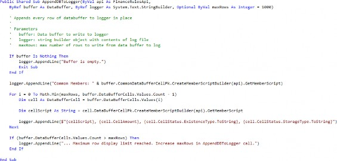
Figure 10.36
In particular, in OneStream, a commonly recommended practice is to create a header for the Main function to list a couple of key pieces of information: the overall purpose of the business rule, what events trigger the business rule, metadata on who created the rule and when it was last updated, and finally a change log.
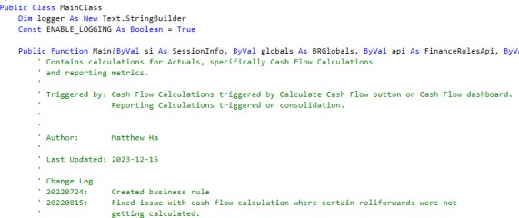
Figure 10.37
It should be noted that this function header isn’t strictly the best practice. In an ideal world, change logs and metadata – like author and last updated date – would be handled in a version control system like Git. However, we realize that customers often lack a version control system, or have them but do not have the security controls in place to accommodate storing financially sensitive financial calculations in them. In lieu of this, storing this information here in the function header can act as a compromise. That said, it is important to keep these headers up to date, as discussed in the Update Comments section.
Business Rules › Business Rule Best Practices
Code Smells and Heuristics
In programming, code smells are signs that there are deeper problems with your program. Often, these code smells are subjective since they’re not strictly ‘wrong’ in the sense your code isn’t compiling and because there are many ways to approach a problem when coding. They might be subtle or glaring. Regardless, code smells are still a good set of heuristics for you to evaluate if your code needs to be optimized or refactored. You should train yourself to always look for them, so that you can quickly pivot and refactor your code into better patterns.
Business Rules › Business Rule Best Practices › Code Smells and Heuristics
Nested If Statements
If you have large numbers of nested If statements, following the logic flow becomes extremely difficult because – at each level – you have to remember the current state of the conditions leading to the current branch. The code is harder to parse visually as well due to the additional indentation levels. With that in mind, high nesting is a sign there is a logic flaw that needs to be addressed or simplified. Let’s cover a couple of heuristics you can use to combat this issue.
Business Rules › Business Rule Best Practices › Code Smells and Heuristics › Nested If Statements
Early Returns
This is an extremely common and effective pattern, and you should look to implement it wherever it makes sense. The Early Return pattern entails checking for exit conditions early, and not executing any code following the exit condition once it is met.
Oftentimes, this involves inverting some logic statement. So instead of saying “If X, do Y”, you flip the logic to say, “If not X, do nothing. Otherwise, do Y.” For example, consider the following code:
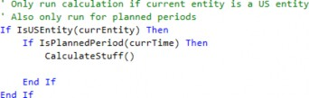
Figure 10.38
We bracket CalculateStuff() in an If block for no real reason; since there is no Else statement, if the entity isn’t a US entity we just do nothing. This code should really be refactored as follows:
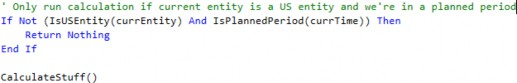
Figure 10.39
This is better for two reasons.
Reading from top to bottom, the logic is easier to follow since I do not need to mentally keep track of the states of
currEntityandcurrTime. I check for their states once at the beginning, and either end the execution or continue.The meat of the code is no longer indented two additional levels!
Business Rules › Business Rule Best Practices › Code Smells and Heuristics › Nested If Statements
Default Branches
Many Else statements are redundant and can be eliminated outright. For example, consider the following code. The Else really doesn’t add any semantic or logical value.
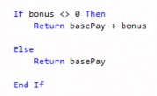
Figure 10.40
Instead, it can be refactored without the Else entirely. The new code now reads like, “If you have a bonus, return the total comp as the sum of base pay and bonus; otherwise return only the base pay by default.”
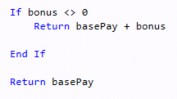
Business Rules › Business Rule Best Practices › Code Smells and Heuristics › Nested If Statements
Simplify and Abstract Conditions
Oftentimes, nested If statements are used in place of proper logical operators (AND, OR, NOT). The resulting code is messy and often results in duplicated code. Let’s take a look at this case study in what not to do, and show how we might refactor it to be more readable.
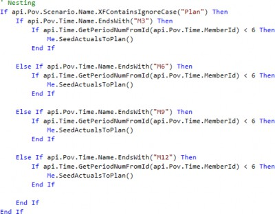
Figure 10.42
Here are a few things we could do to improve this code.
First, we can abstract the conditional expressions into functions that express their intent better.
Checking if the period is before
M6is really checking whether we are in a planned period or not.Checking the string to see if we end in 3, 6, 9, or 12 is really checking whether the active time is a quarter month.
Checking if the active scenario contains
Planin the name is really checking whether we are in a planned scenario.
We can combine conditions using logical operators, to reduce nesting.
As a cherry on top, we can implement the Early Return pattern to reduce nesting further.
Let’s see what the code looks like now! The logic is much easier to parse, and we now only need to reference SeedActualsToPlan once.
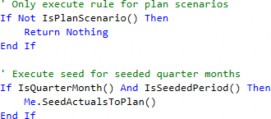
Business Rules › Business Rule Best Practices › Code Smells and Heuristics
Duplicate Code
This is one of the most common code smells I see when maintaining and debugging code in OneStream. Often, duplicate code gets created when code is copied from one section to another, with only slight variations. If you see what looks like duplicate or repeating code, that is almost always a sign that you should be refactoring.
Business Rules › Business Rule Best Practices › Code Smells and Heuristics › Duplicate Code
Iterate Using Data Structures
If you see the same pattern repeat multiple times, consider using some sort of loop structure instead. For example, let’s look at this example:
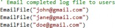
Figure 10.44
Notice that there is nothing different between these calls to EmailFile other than the passed email address. This would be better written like so:
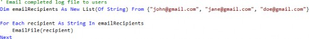
Figure 10.45
This conveys the intent of the code better, as it is more obvious that we’re just calling the same code block, with the only thing changing between calls being the recipient. Also, the code is more scalable, as it’s easier to modify the list of recipients.
Business Rules › Business Rule Best Practices › Code Smells and Heuristics › Duplicate Code
Abstract Using Functions
In OneStream, calculations are often duplicated due to thoughtless copy/pasting. Rather than taking the time to generalize or extend the calculation, it’s often tempting to take preexisting code, copy it, and modify variables as needed to replicate functionality. The solution here, instead, is to abstract the code into a function so it can be reused, and then reference that function. In the world of software engineering, this concept is known as “DRY”, which stands for Don’t Repeat Yourself.
For example, let’s consider this example of an allocation calculation, which allocates to the base U3 Products under NAProducts. The code was copied to extend the allocation to EUProducts as well.
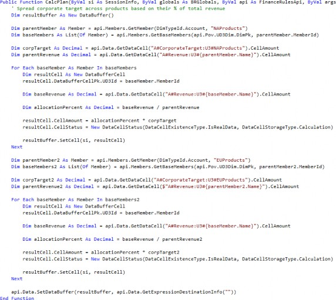
Figure 10.46
The code is verbose and difficult to follow. Without reading line by line, it would be difficult to notice that the only real difference between the two blocks is that the U3 parent referenced is NAProducts in the first calculation, and EUProducts in the second calculation. Let’s refactor this code so that the calculation is contained in a subroutine instead.
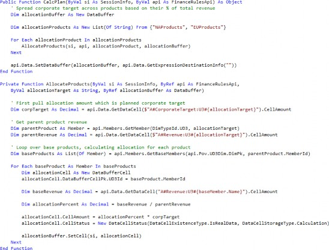
Figure 10.47
This is much better, let’s cover what was changed:
The calculation logic is abstracted into the
AllocateProductsfunction, so that you only need to pass in the product hierarchy which needs to be allocated. Arguably, this function still does a bit too much and should be broken down further, but this is sufficient for now.The variable names in the
AllocateProductsfunction have been given more meaningful names, so the logic is easier to track.Finally, we loop over a list of products which contains both
NAProductsandEUProductsand callAllocateProductsonce for each. This conveys that the logic for the allocation is the same for both products.
Business Rules › Business Rule Best Practices › Code Smells and Heuristics
Functions Should Do One Thing
If your function or sub is getting extremely long and doing too much, that’s usually a sign that you need to refactor. In the words of Robert C. Martin in Clean Code, functions should “Do One Thing.” Though the whole idea of “one” thing is a bit subjective and shouldn’t be taken too literally, the idea is that you want to break up your functions so they each have a single responsibility.
Here are a couple of signs that your function is too complicated:
Too many lines: at a couple of dozen lines, I would start getting suspicious (though raw line number isn’t always the best metric).
Complicated conditions: once your conditions start getting complicated and you have nesting three levels deep, or you notice three+ code branches, I would start looking into breaking up the function into sub-functions that each handle different groups of conditions.
Lots of paragraph breaks or regions: these usually indicate a logical grouping of code, and if you find that you are depending on them to break up your code, I will argue that these groupings should instead be broken out into separate functions.
Let’s cover an example of a function that, while not overly long, is doing too many things.
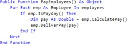
Figure 10.48
Really, this function is doing three things: it loops over all the employees, checks whether each employee should be paid, and then actually pays the employee. We can refactor this code by breaking it up like so:
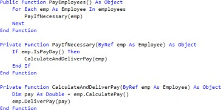
Figure 10.49
In OneStream, it’s common to have massive finance rule files with thousands of lines of calculations and business logic. These should be broken up into sub-calculation routines so that when updates must be made, they can be made into small manageable chunks; this applies to debugging as well.
Business Rules › Business Rule Best Practices › Code Smells and Heuristics
Vertical Separation
As a general rule of thumb, variables and functions should be declared as close to where they are used as possible.
A common example of extreme vertical separation is the convention where all variables are declared at the top of a code block. This isn’t strictly ‘wrong’ and comes from the desire to group things together (they are all variables, after all). However, it’s more useful to group objects together that share a purpose, so you do not have to scroll around to figure out what a variable is or refactor if necessary.
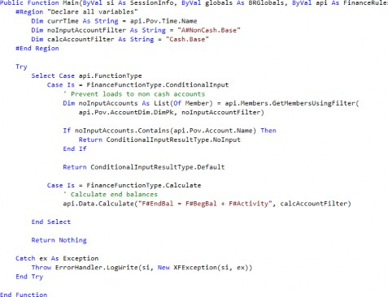
Figure 10.50
It would be better to move the account filter declarations into the appropriate case blocks so that they live next to the code that references them. Also, while we’re at it, we might as well refactor the code and create subfunctions so that the main function does not contain low-level implementation detail.
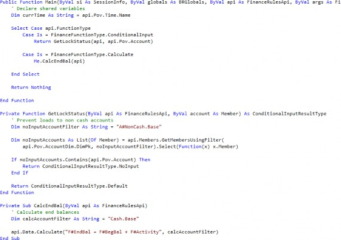
Figure 10.51
Business Rules › Business Rule Best Practices › Code Smells and Heuristics
Dead Code
Dead code is code that never gets reached or never gets called. There are many forms of this, but here are a couple of examples:
Deprecated variables that are no longer referenced. OneStream and most IDEs will warn you when compiling a rule with unreferenced variables.
Functions that are never called.
Code in conditional blocks where the condition is impossible.
A common example of this is checking against some conditional variable, but there is nowhere in the code where that variable is ever modified. The code in the conditional block is not only pointless, it’s misleading because it implies there are situations where you should do something when the state flag is tripped.
Here, if nothing ever modifies the value of state, then we never get to the block of code with ‘do something’. It’s always dead code.
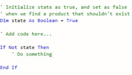
Figure 10.52
Dead code should almost always be removed. Just like with commented-out code, they create clutter at best; at worst, they create confusion and slow development time.
Luckily, the first two examples are easy to address.
When you compile a business rule and see warnings that variables are not referenced, simply go to those lines and jettison them!
As for dead functions, when parsing through new business rules, the first thing I do is use an IDE or a simple find-all to see whether functions are being called at least once in the code. If not, then I will delete those unreferenced functions.
Business Rules › Business Rule Best Practices › Code Smells and Heuristics
Over-abstraction
While under-abstraction and duplicate code are code smells that should be addressed, over-abstraction is also an issue. This is where coding becomes more of an art than a science, as the definition of “over-abstraction” is a hotly debated topic.
Over-abstraction can lead to complex and tightly coupled code, which means that making changes in one place requires you to make changes in many other places. As a general rule, if you are finding that when you are troubleshooting, you must constantly navigate through multiple layers of abstraction to get to the code to debug, that is usually a sign that you should refactor your code to reduce unnecessary abstraction.
Remember that abstraction should make code simpler and easier to read—you should strive to be deliberate about when you apply abstraction, as abstraction for abstraction’s sake isn’t necessarily good.
Business Rules › Business Rule Best Practices
Syntax Tips
While there are many ways to get to the same result in VB.NET, there are certain patterns that you should seek to implement as they are easier to read and maintain; conversely, there are patterns that you should avoid as they create confusion and clutter.
Business Rules › Business Rule Best Practices › Syntax Tips
String Interpolation
String interpolation is a feature in VB.NET (and many other programs) that lets you embed expressions into strings using the string interpolation operator ($). Overall, string interpolation is usually better than complex string concatenation with the concatenation character (&). Technically, you can also insert expressions into strings using the String.Format() method, but string interpolation is easier, faster, and nicer to read.
Here are two use cases for string interpolation:
Building file paths.
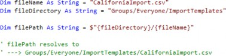
Figure 10.53
Building member scripts in-line.
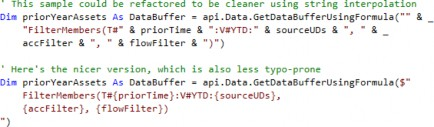
Figure 10.54
Note: Be extremely careful not to miss the string interpolation character! Without it, VB.NET won’t perform the expression replacements, and just resolves the string literally ‘as-is’. This is particularly important with Member Filters, like A#{topAccount}.Base. Without the $, OneStream will search for an account named {topAccount} and find nothing. |
Business Rules › Business Rule Best Practices › Syntax Tips
Multi-line Strings
VB.NET can support multi-line string literals as of 2015, so abuse it! This lets you avoid using large numbers of line continuation characters (_) just to make your string readable, or using workarounds like Text.StringBuilder objects, both of which create code that is hard to read and update.
A common use case for multi-line strings is dealing with large, embedded SQL queries. Let’s first look at what not to do, and then follow it with why the multi-line approach is cleaner.
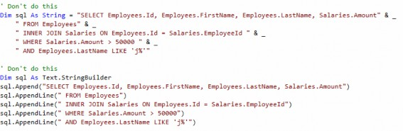
Figure 10.55
By using multi-line strings, you now have the ability to indent your query as you normally would in SQL, and even copy and paste it between editors without having to reformat every time. Much better!
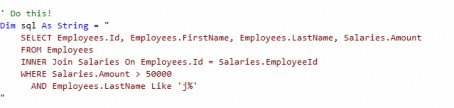
Figure 10.56
Business Rules › Business Rule Best Practices › Syntax Tips
Collection Initializers
You can create and populate collections using the From keyword followed by braces ({}). This is easier to implement and read compared to initializing an empty collection and calling the Add method repeatedly. Let’s look at two examples.
Business Rules › Business Rule Best Practices › Syntax Tips › Collection Initializers
Initialize Lists
Let’s look at this list:
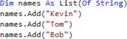
Figure 10.57
This code can be refactored like so. Both of these versions are acceptable, but the second version is better when the list of strings is extremely long and won’t fit on a single line.
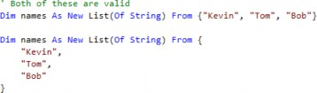
Figure 10.58
Business Rules › Business Rule Best Practices › Syntax Tips › Collection Initializers
Initialize Dictionaries
Let’s look at this dictionary, which can also be refactored using collection initializers:
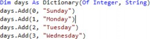
Figure 10.59
Again, we can refactor the code as follows. The syntax is slightly different than with the lists, as each element itself is a collection with its own brackets.
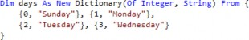
Figure 10.60
Business Rules › Business Rule Best Practices › Syntax Tips
LINQ
LINQ stands for Language-Integrated Query; it is a feature that allows you to query from SQL Server databases or even local collections. You can think of LINQ as having the same sort of query capabilities as SQL, with similar syntax. For example, here we perform a full LINQ query on a list of customers.
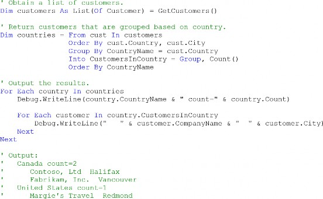
Figure 10.61
Something interesting, though, is that all enumerable objects in VB.NET – by default – have access to the System.Linq enumerable static methods, which include things like Select() and Where(). These methods behave as you would expect them to in SQL, which is useful when you want to either filter a set of objects by some condition, or grab only certain properties of a set of objects. These are just shorter, in-line alternatives to executing a ‘full’ LINQ query as shown in the example above.
Business Rules › Business Rule Best Practices › Syntax Tips › LINQ
LINQ Select
Let’s cover an example of what a LINQ Select statement looks like:
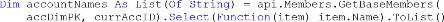
Figure 10.62
There are a lot of elements here, so let’s break them down one by one.
First, we grab the base members under our current account using
GetBaseMembers(). This returns aList(Of Member), which is an enumerable object. This means it has access to theSelect()method.We call the
Select()method, and pass it a transform function which we use to map each item in the member list to the property we want. In this case, each item will be of type member, and we want the name of each member in our final list, so we extract it withitem.Name.The
Selectmethod returns an IEnumerable Collection, so we must cast the output to a list manually, otherwise we will get a runtime error because VB.NET will attempt and fail to cast the output to aList(Of String).
After all of this, accountNames should consist of a list of the names of each member we got from the GetBaseMembers() call.
Note: For the transfer function, item could be anything; we could have named it arbitrarily “x” and it would have been valid. Whatever we specify is just used as the variable pointing to each element of the collection you’re looping through, similar to a For…Each loop. |
Business Rules › Business Rule Best Practices › Syntax Tips › LINQ
LINQ Where
Let’s cover an example of a LINQ Where statement, which is similar to a LINQ Select statement.
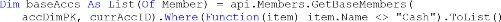
Figure 10.63
The difference here is that rather than passing in a transform function into the Where() method, we pass in what is known as a predicate function. This is a function that we use to test the condition we are filtering for. In this case, we want to keep only the members whose Name value does not equal "Cash".
| Note: For more details on LINQ and the built-in enumerable query methods, refer to the Microsoft VB.NET Documentation pages. |
Business Rules
Troubleshooting Business Rules
Business Rules › Troubleshooting Business Rules
Common Business Rule Errors
Business Rules › Troubleshooting Business Rules › Common Business Rule Errors
Compilation Errors
Compilation errors are generated by the compiler before the code is executed, and generally refer to syntax errors. Here are the most common compilation errors and how to resolve them.
Business Rules › Troubleshooting Business Rules › Common Business Rule Errors › Compilation Errors
Casting Errors
VB.NET is generally surprisingly good about implicitly casting values upon assignment. In particular, most objects in VB.NET have robust ToString methods, so almost everything can be cast to a string object. For example, here, the integer 1234 is automatically cast to a string as it is assigned to the str variable.
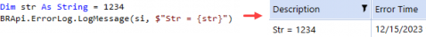
Figure 10.64
However, you will get a casting error when VB.NET does not have a built-in way to cast between objects of one class to another. This will typically happen when you are using custom classes. For example, here we get an error because our function expects the inputArgs parameter to be of type FinanceRulesArgs, but we pass in args which is declared as ExtenderArgs.
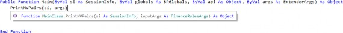
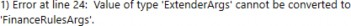
Figure 10.65
In this specific case, we can fix the error by updating the function definition so inputArgs is of type ExtenderArgs.
Business Rules › Troubleshooting Business Rules › Common Business Rule Errors › Compilation Errors
Scoping Errors
Without going into too much detail, scoping is the concept that variables are only accessible in the enclosing block they are declared in. If you try to access a variable outside the scope they exist in, VB.NET will throw an error and tell you that the variable has not been declared, which might seem confusing because you can see the declaration ‘right there!’ But really what it means is that the variable hasn’t been declared within your current scope.
Consider the example below. Because we declare amount within the If block, as soon as the If block ends, the variable is no longer accessible.
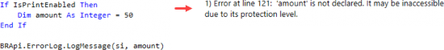
Figure 10.66
To fix this, simply declare amount outside and right before the If block and initialize it with a default value. This way, amount is accessible from the outer block, and will always have a value even if the If block is never entered.
Figure 10.67
Note: If you’d like to read up more on scoping as a concept, refer to the Microsoft VB.NET documentation. |
Business Rules › Troubleshooting Business Rules › Common Business Rule Errors › Compilation Errors
Missing End Statement
Every control flow structure (e.g., If…Then…Else, For…Next, While…End While, etc.) is marked by starting and ending keywords. If you are missing an ending expression, you will receive a compilation error detailing which opening condition you need to close.
Figure 10.68
This is where, hopefully, you’ve been disciplined with your indentation; if you were, then finding the matching End If is as simple as going to line 129, hovering your cursor over the starting indentation of the If expression, and scrolling down until you find where the code jumps indentation incorrectly.
Business Rules › Troubleshooting Business Rules › Common Business Rule Errors
Runtime Errors
Business Rules › Troubleshooting Business Rules › Common Business Rule Errors › Runtime Errors
Object Reference Not Found
This error occurs at runtime when you attempt to access a property or method of a variable that is null. Typically, this happens when you assign a variable the output of a function, and the function on runtime returns nothing.
A common example of this in OneStream is in connectors when a SQL query returns no records. Here, if the ExecuteSql function returns no records, the queryRecords objects remain empty. If you then attempt to loop over the records, you will get the infamous “Object Reference Not Found” error.
Figure 10.69
To protect against situations like this, it’s usually a good idea to implement checks to prevent the code from progressing unnecessarily on certain conditions. For example, here we can add a check to end the program execution if the query returns no records.
Figure 10.70
If you are already too late and you are troubleshooting this error, then your only option is to build out a logger to see at what point your program is failing, to narrow down which variable is coming back as null.
Business Rules › Troubleshooting Business Rules › Common Business Rule Errors › Runtime Errors
Invalid Script
This error occurs when you have specified an invalid member in a member script in an api.Data.Calculate call.
Figure 10.71
Usually, this means one of a couple of things:
The member does not exist.
You have a typo.
The member truly is invalid, which means you should check your cube dimensionality to see if you’re choosing a member that exists at the wrong extensibility level.
Business Rules › Troubleshooting Business Rules
Logging Techniques
The main method of troubleshooting and debugging business rules is building logs, especially since OneStream does not have a built-in debugger. Logs can then be displayed directly in the error logs, written to files in the FileShare, or even emailed to yourself.
This section will cover the syntax to build and create robust log files.
Business Rules › Troubleshooting Business Rules › Logging Techniques
Building Your Log
Business Rules › Troubleshooting Business Rules › Logging Techniques › Building Your Log
Appending to Loggers
Generally, the traditional approach of logging in OneStream is to sprinkle in BRApi.ErrorLog.LogMessage() calls as needed. This is typically what is covered in business rules courses, and is what is shown in the admin training course.
Figure 10.72
While this is fine for quick one-off logging, it quickly falls apart for any sort of complicated troubleshooting as you try to add log messages to different code branches. This is because each LogMessage call appears as a separate entry in the error log tables. If you add logging in loops, you could even flood your logs completely; finding any one specific log entry becomes almost impossible.
Figure 10.73
The problem becomes even worse when you begin running data management sequences on multiple entities at once, as OneStream will create threads in parallel. Now, your logs will intertwine with each other in no guaranteed order – first thread in wins.
To solve these issues, a much better way to log is by creating a single Text.StringBuilder logger object; build your log by appending to that instead. Then, you write the contents of this logger to the error log a single time at the end of your code.
Figure 10.74
As you can see, every time you would normally call LogMessage, you instead call the logger objects AppendLine() method and pass in your text as a string argument. Doing this gives you a log file that is much more user-friendly!
Figure 10.75
If you were expecting to debug multiple entities, you could even start each log by adding details on the active entity, scenario, and time, so you can differentiate between each thread’s execution in the error log later.
Note: You must convert the logger object explicitly to a string using the ToString function when passing it into the LogMessage function, otherwise you will receive a casting error. |
Business Rules › Troubleshooting Business Rules › Logging Techniques › Building Your Log
Logging List Contents
This section really defines how to log a list within your string of code. Let’s create an example list of fruit and log out that list.
Figure 10.76
If you tried to log this list variable – as you normally would using the LogMessage() function – you would receive a compilation error.
Figure 10.77
To resolve this, you can use the built-in String.Join function, which concatenates each element of a list together into a single string.
Figure 10.78
Tip: Notice that the first argument into the String.Join() function is a delimiter. This could be any character we choose. In the example above, we chose a | character, but we could just as easily have chosen a comma. |
Business Rules › Troubleshooting Business Rules › Logging Techniques › Building Your Log
Logging Dictionary Contents
Logging a dictionary is very similar to logging a list. However, while lists consist of items that are single objects, dictionaries consist of key-value pairs. Let’s initialize a dictionary and cover how you would log both the keys and the values in a readable format.
Figure 10.79
The main idea here is that you can log the dictionary values and keys separately by using the values and keys properties of a dictionary object. Both of these properties return enumerable objects, which can be passed to the String.Join() method just like lists.
Figure 10.80
Business Rules › Troubleshooting Business Rules › Logging Techniques › Building Your Log
Serializing Objects
Oftentimes, you’ll have objects that contain many properties. Instead of individually logging each property one by one, which would be incredibly tedious, you can instead “serialize” the object, converting the object to a string in JSON format.
To do this, you can import the Newtonsoft.Json and Newtonsoft.Json.Linq namespaces, and use the JsonConvert.SerializeObject() function.
Figure 10.81
The resulting string is where each property is listed next to its value. This is particularly useful when debugging when you are trying to figure out what an object contains.
Figure 10.82
Business Rules › Troubleshooting Business Rules › Logging Techniques
Writing Logs to ErrorLog
To write logs to the ErrorLog, use the BRApi.ErrorLog.LogMessage() function. This will create an Information entry in the error log.
Figure 10.83
If you are in a finance rule, the finance API provides you with a nice shortcut via the api.LogMessage().
In fact, this is actually recommended whenever possible, as the api.LogMessage function is slightly more performant than BRApi.ErrorLog.LogMessage(); this is because the BRApi version creates a new connection to the log database on every execution.
Figure 10.84
Business Rules › Troubleshooting Business Rules › Logging Techniques
Muti-threaded Logging
This is a fairly advanced concept, but recall that when you run data management sequences on multiple entities at once, OneStream will create multiple threads in parallel. In this situation, the code for writing logs to the FileShare in the previous section will fail, as multiple threads won’t be able to access the same file simultaneously.
To address this issue, here is a slightly more complicated version of the logging code that accounts for multi-threaded execution. Otherwise, the function can be used in exactly the same way. Here are a couple of important notes:
You must import the
System.Threadinglibrary at the top of whatever file contains this function.You must declare the shared locker variable in the same scope as the
AsyncAppendToFile
function.
As one final recommendation, because we’ve discussed so much on abstraction, rather than copying the code directly into every business rule, instead copy the code to a shared global business rule. Then, that global rule can be imported into each finance rule as necessary, and the AsyncAppendToFile function called from that context.
Import:1 System.Threading
Shared Dim .loc.ker As Nen' ReaderW.riterLock() Pllblic Shared function .Jl..sync..�ppendToF.ile{
ByVal si AB Sessioninfo, ByVal api AB Object:, ByRef logger As Sy:item.Text.StringBuilder, Optional ByVal fileName As String= "LOG", Optional ByVal fileSuffix As String= Nothing,
Optional ByVal targetfolder As String "TestLogs",
Optional ByVal timeoutinMS A:1 Integer= 30000) AB String
'Append logger to text file in Groups\Administrators directory using nrulti-threading.
'Note: thi:1 logger handJ.es multi-threading far a given user. if tliD u:1ers attempt to write to
'the same file :1illlultaneously, then the function errors.
' Parameters
logger: string builder object with contents of log file fileName: optional log file name. defaults to LOG fileSuffix: optional log file suffix. default:1to system time in yyyy-MM-dd HH format:
targetFolder: optional log folder destination. defaults to TestLogs timeoutinMS: how long to wait for previous thread to release file before continuing
'Returns
filepath of log file
If fileSuffix Is Nothing Then
Dim logTime As String DateTirue.Now.ToString("yyyy-MM-dd-HH"),
Dim logUser As String = si. UserName.Split I,. ") (0)
fileSuffix E.nd If$" {logTime} {logUser}"
Dim ogFileName As String = $"{fileName} {fileSuffixl .txt"
Dim foldlerPath As String = BRApi.Utilit.:.es,.GetF.ileShareFolder(si, FileS:hareFo.lderTypes.Appl.icatianRoot, Nothing) & "\" Iii: si ..AppiName,.IoString & "\Groups\Administrators\" & targetFoldler
Dim tar·getPach As String = $"{folderPath}\{logFileName J"
'Obtain lock, then append text to file (creating file if it doesn't exist)
' Then release lock for next thread
Try
locker.AcquireWriterLock(timeoutinMS}
If locker.Is'ii'riterLockHeld Then
If Not System.IO.,Directory.Exists(folderPath) Then System.IO.Directory.CreateDirectory(foldeI'E'ath),
End If
If Not System.IO.,Fi.le.Ex.:.sts{targetPath) Then System.IO.File.Create(targetPath}.,Close
End If
System.IO.,File.AppendAllText{targetPach, logger.ToString) End If
Catch ex As .ApplicationException
Throw Nen" Exception($,.Error in AByncAppendToFile: Thread timed out as previous thread took too long to write to £ile. Increase method tmeout.0)
Finally
If locker.IsWriterLockHeld Then locker:.ReleaseW.riterLocl:(:)
End If
End Try
Return targetPath End FunctionFigure 10.87
Business Rules › Troubleshooting Business Rules › Logging Techniques
Emailing Logs
Here is a function I wrote that allows you to email a log file on the FileShare to yourself or your fellow admins. To use this file, there are a few pre-requisite configuration steps:
You must import the
System.IO.Compressionlibrary at the top of the file containing this function.The following
dlls must be added to the Referenced Assemblies field of the business rule:C:\Windows\Microsoft.NET\Framework64\v4.0.30319\System.IO.Compression. dll;C:\Windows\Microsoft.NET\Framework64\v4.0.30319\System.IO.Compression. FileSystem.dll
Figure 10.88
Here is the code itself:
Imports System.IO.Compression
...
Public Shared Function EmailLogFile(ByVal si As SessionInfo, ByVal recipientList As List(Of String), ByVal logFileName As String, ByVal logFolder As String)
' Parameters:
' recipientList: list of email address (e.g., bob@onestream.com) ' logFileName: use as header
' logFolder: folder path with respect to Groups\Administrators (e.g., 'TestLogs\CalcLogs')
' First zip log file
Dim zipFolderPath As String = $"{BRApi.Utilities.GetFileShareFolder(si, FileShareFolderTypes.ApplicationRoot, Nothing)}\{si.AppName.ToString}\Groups\Administrators\{logFolder}"
Dim originalFilePath As String = $"{zipFolderPath}\{logFileName}" Dim zipFilePath As String = originalFilePath.Replace(Path.GetExtension(logFileName), ".zip")
Using fs As New FileStream(zipFilePath, FileMode.Create) Using arch As New ZipArchive(fs, ZipArchiveMode.Create)
arch.CreateEntryFromFile(originalFilePath, logFileName) End Using
End Using
' Then send email with zipped log file attached
Dim attachments As New List(Of String) From {zipFilePath}
BRApi.Utilities.SendMail(si, "OneStreamEmail", recipientList, logFileName, "Log file attached here.", attachments)
Return Nothing End FunctionBusiness Rules
Technical References
Business Rules › Technical References
Member Filter Syntax
Member Filter syntax in OneStream is sometimes hard to remember. In particular, you must be very careful with whitespace and the use of brackets. To save you the trouble, we’ve tested every permutation for Member Filters and compiled our results in this section.
Business Rules › Technical References › Member Filter Syntax
Member Filters as Arguments
Many finance API functions such as api.Data.ClearCalculatedData, api.Data.Calculate, and api.Members.GetMembersUsingFilter all allow you to pass Member Filters as arguments.
Figure 10.89 Here are the rules when passing in filter strings as arguments:
OneStream will ignore any statement surrounded by brackets, and any subsequent statement is guaranteed to also fail.
It is counterintuitive, but if the first statement has no brackets, that filter will succeed. Subsequent filters that are surrounded by brackets will fail as usual.
Brackets must be used to surround string literals with spaces. For example, (Text1 StartsWith [Corporate Account]).
For your convenience, here are some sample examples:
| Example | Result |
|---|---|
api.Data.Calculate("A#Revenue = A#Revenue:T#PovPrior1",,,,,, "U2#TotalProd.Base.Where(Text1 = CatA), U2#TotalProd.Base, ,,,,,,,, | Succeeds |
api.Data.Calculate("A#Revenue = A#Revenue:T#PovPrior1",,,,,, "U2#Vehicles.Base, [U2#TotalProd.Base.Where(Text1 = CatB)]", ,,,,,,,, | OneStream will successfully process Vehicles.Base, but the second filter will fail |
api.Data.Calculate("A#Revenue = A#Revenue:T#PovPrior1",,,,,, "[U2#TotalProd.Base], [U2#TotalProd.Base.Where(Text1 = CatB)]", ,,,,,,,, | Fails quietly |
Figure 10.90
| Note: Technically, OneStream will not throw an error when the bracket syntax is incorrect. What is happening is that OneStream applies the filter and returns no records, and just continues quietly. This makes it seem as if OneStream has done nothing. |
Business Rules › Technical References › Member Filter Syntax
Member Filters in FilterMembers Function
Functions that process data buffers in the background, such as api.Data.Calculate and api.Data.GetDataBufferUsingFormula, will allow you to use the FilterMembers function to filter the source data buffers. The syntax when doing this is slightly different compared to passing arguments directly in the overall function call.
Here are the rules when passing filters as arguments in the FilterMembers function:
OneStream will evaluate any statement surrounded by brackets, but it is not technically necessary if the statement does not have a member expansion function.
If a statement has a member expansion function (e.g.,
Where), this statement must be surrounded by brackets or OneStream will throw an error saying it is expecting a comma.When passing UD Member Filters, you can wrap each item in a bracket individually or together; it doesn’t matter which.
For example, [U3#CC01, U3#CC02] and [U3#CC01], [U3#CC02] are both valid.
For your convenience, here are some sample examples:
| Example | Result |
|---|---|
api.Data.GetDataBufferUsingFormula("FilterMembers( A#Revenue:T#PovPrior1:O#Top:F#EndBal:U1#Northropp, [U2#TotalProd.Base.Where(Text1 = 'CatA')], [U2#TotalProd.Base])") | Succeeds |
api.Data.GetDataBufferUsingFormula("FilterMembers( A#Revenue:T#PovPrior1:O#Top:F#EndBal:U1#Northropp, U2#Vehicles.Base, [U2#TotalProd.Base.Where(Text1 = 'CatB')])") | Succeeds |
| api.Data.GetDataBufferUsingFormula("FilterMembers( A#Revenue:T#PovPrior1:O#Top:F#EndBal:U1#Northropp, U2#Vehicles.Base, U2#TotalProd.Base.Where(Text1 = 'CatB'))") | Fails at runtime with invalid script error |
Figure 10.91
Business Rules › Technical References › Business Rule Shared Constants
Common Constants
For your convenience, here is a table listing the most commonly used constants:
| Enum/Class | Members |
|---|---|
| AccountTypeId | |
| CalcStatusId |
| Enum/Class | Members |
|---|---|
| ConsMemberId | |
| CurrencyId | |
| ScenarioTypeId | |
| SharedConstants.Work flowProfileAttribute Indexes |
| Enum/Class | Members |
|---|---|
| DimTypeId | |
| DimConstants |
Figure 10.93
These are just a few of the enumerations available to you; for a full list, refer to the OneStream API Details and Documentation.
Business Rules › Technical References › Business Rule Shared Constants
Use Case 1: Function Arguments
In general, whenever a method calls for some sort of ID as a parameter, it’s a good first step to see if there is an Enum that exactly matches the name of the parameter (e.g., DimTypeId from our earlier example). Surprisingly, the majority of the time you’ll find that there is a constant that will exactly fit the bill!
Figure 10.94
Business Rules › Technical References › Business Rule Shared Constants
Use Case 2: Comparisons using Constants
Whenever possible, it’s better to write comparison expressions using these constants. The resulting code is less error prone and is more readable.
Figure 10.95
| Tip: In general, it’s good practice to avoid hardcoding strings and doing string comparisons. A really common example of this is looking for string patterns in scenario names, which almost always ends up causing problems down the road when someone makes a typo or renames a scenario. Doing type comparisons with enumerations is much more robust. |
Business Rules › Technical References › Business Rule Shared Constants
Use Case 3: Joining to Database Tables
In the backend tables, OneStream typically stores the IDs of objects. However, some of these IDs are not stored in any tables, so you cannot perform any SQL joins to get the names of these members. The consolidation ID field (ConsID) is an example of this.
Figure 10.96
If you wanted to format this in a report that shows the actual currency names, you would have to query the database using a business rule and then map the currency IDs to their respective names via the CurrencyID enumeration.
Business Rules › Technical References
Cell Status Table
Each data record in the application database has 12 YTD values, one for each month, and corresponding cell status codes. This is the same information that is shown to you when you right-click a cell to view its cell status.
Figure 10.97
For your reference, here is a chart listing what each of these status codes represent.
Figure 10.98
Business Rules › Technical References › Cell Status Table
Derived Cell Status
Let’s discuss what the default cell status is, and how cell status changes when data is written. If you load data to period N (where N is an int from 1-12), two things will happen:
Prior periods <N will get updated with cell amount = 0 and cell status = 16 (
NoDataand storage type =StoredButNoActivity)Future periods >N will get updated with derived cell amount = 0 and with cell status = 18 (
IsDerivedDataand storage type =StoredButNoActivity).
These derived values are actually calculated and stored in the database for quick retrieval during reporting.
A subtle detail is that the derived 0 amount might be placed in either the YTD or the periodic view, based on the No Data Zero View for NonAdjustments setting on your scenario. If you put YTD, the system will assume the next period’s YTD amount is 0. If you put periodic, the system assumes the next period’s MTD amount is 0. This mainly affects PNL accounts which are handled as periodic, since BS accounts treat MTD and YTD as the same.
Business Rules › Technical References › Cell Status Table
Filtering by Cell Status
Understanding how OneStream uses cell status is important because it helps you understand how OneStream filters when performing various operations. Here are two examples of this:
When you call
api.Data.ClearCalculatedData, what the finance engine is really doing behind the scenes is filtering for all data in your Data Unit that has storage typeCalculation(andDurableCalculationif you’ve specified to also clear Durable).When you grab a data buffer using
api.Data.GetDataBufferUsingFormula, the finance engine will actually include NoData cells with the status ofStoredButNoActivityby default. You’d have to use the Member Filter functionRemoveNoDatato get rid of these.
Business Rules › Technical References
Microsoft VB.NET Documentation
If you are new to VB.NET, it can be intimidating sorting through the swathe of available resources via Google. These are the official Microsoft VB.NET documentation sites, which I often refer to myself when writing business rules.
Use the .NET API to look at available modules and methods. The Language Reference offers explanations on VB.NET syntax. Finally, the Language Features pages explain core concepts of the language.
Home page: https://docs.microsoft.com/en-us/dotnet/
Language Reference: https://docs.microsoft.com/en-us/dotnet/visual-basic/language-reference/
Language Features: https://docs.microsoft.com/en-us/dotnet/visual-basic/programming-guide/language-features/
.NET Standard Guide: https://docs.microsoft.com/en-us/dotnet/standard/
.NET Framework Guide: https://docs.microsoft.com/en-us/dotnet/framework/
.NET API: https://docs.microsoft.com/en-us/dotnet/api/?view=netframework-4.8
Business Rules › Technical References
OneStream API Details and Documentation
This provides documentation on the namespaces of the OneStream API. This is useful for figuring out the methods available for each engine, and also for seeing the available enumerations you can reference in business rules.
You can find the API in the Documentation directory of any OneStream installation package (though you do have to dig a bit). For example, for version 6.6.0, the API can be found at: OneStream_6.6.0/OneStream_Doc_On_Prem_6.6.0/Documentation/OneStreamAPIDetails AndDocumentation_6.6.0.zip
Business Rules › Technical References
Recommended Reading
These are not OneStream official endorsements, but two books that are well-regarded in the programming space that I also personally recommend to everyone, regardless of whether you are new to your programming journey or already a seasoned veteran.
Clean Code: A Handbook of Agile Software Craftmanship by Robert C. Martin
The Art of Clean Code by C. Mayer
Of course, some of the rules proposed are subjective, just as some of the rules in this chapter are subjective. The key is to focus not on following each rule to the extreme, but keeping in mind the general principles of writing clean code, which is to make code as readable as possible.
Business Rules
Useful Tools
Business Rules › Useful Tools
Snippets
The Snippets Marketplace Solution contains sample code for many common business rule patterns in OneStream. For example, there are snippets for querying databases, creating files in the FileShare, and automating workflows. It’s a good idea to skim through the available snippets, as they’ll save you a lot of time in the long run – no need to reinvent the wheel!
Figure 10.99
Business Rules › Useful Tools › Snippets
IDEs and Text Editors
There are a lot of great options for code development in VB.NET. In particular, Visual Studio is really tailor-made by Microsoft for VB.NET and C# development, allowing you to easily download the correct .NET framework for your application. Notepad++ is also a nice lightweight option.
These editors have a couple of great advantages over the built-in editor in OneStream:
Auto-indentation and formatting.
Comparison tools that allow you to quickly highlight differences between files and versions.
Refactoring tools, enabling you to quickly refactor variable and function names or reorganize code.
However, there is a trade-off to using these IDEs. Typically, it is not possible to access the OneStream DLLs, meaning that you cannot import the standard OneStream libraries and leverage IntelliSense. Also, even if the dlls were available, you would not be able to debug business rules in the IDE out of context. You would still have to copy your code into your development environment to test.
Generally, my workflow is to do my initial pass of my business rule and most of my development in general in the OneStream code editor but then migrate code over to Visual Studio or Notepad++ when I need to do heavy refactoring or formatting, especially when updating old code.
Business Rules › Useful Tools › Snippets
Business Rule Viewer
The Administrator Solution Tools Marketplace Solution contains a business rule viewer, which allows you to view all previous versions of business rules. We would always recommend downloading it as it allows you to have confidence you can always roll back your code or review old code in the context that it was run in.
Figure 10.100
Business Rules
Conclusion
In this chapter, we covered a large number of technical topics. We covered the basics and context around the finance engine and how to interact with it in finance rules using the finance API. We listed best practices around business rules, focusing on accepted coding standards as well as heuristics to identify if there are flaws in your code that need to be addressed. Finally, we provided a guide to troubleshooting rules, focusing heavily on advanced logging techniques.
Again, we know that business rules are a complicated topic, so we hope that this chapter is a helpful supplement to all of the other resources available to you, which typically teach you the rote levers of how to code but very rarely the why.